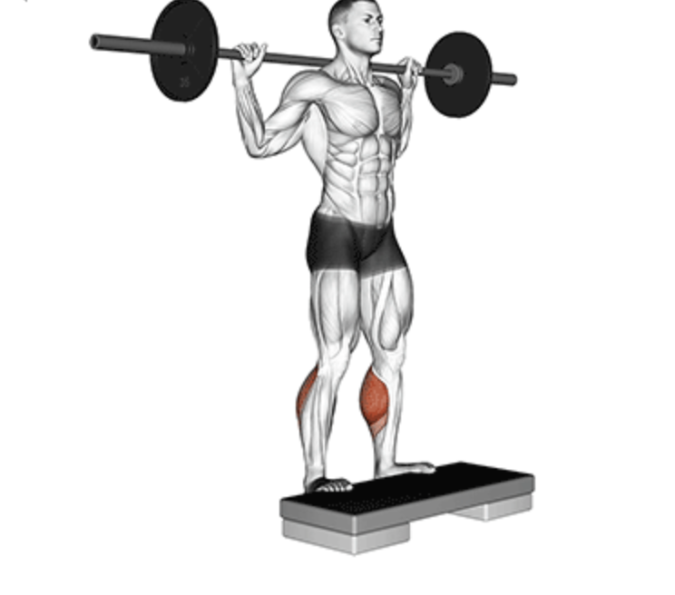

Standing Calf
Setup
Position yourself on a standing calf raise machine with your shoulders under the pads.
Place the balls of your feet on the edge of the platform, letting your heels hang off freely.
Stand upright with your core engaged, legs straight but not locked.
Keep your chest up and spine neutral throughout the movement.

Execution
Lift:
Press through the balls of your feet to raise your heels as high as possible.
Pause:
Hold the top position for a second, squeezing your calves.
Lower:
Slowly lower your heels below the platform to feel a full stretch.
Repeat:
Perform the desired number of reps with controlled movement.
Tips for Effectiveness
Stretch and Squeeze:
Focus on getting a deep stretch at the bottom and a tight squeeze at the top.
Controlled Tempo:
Avoid bouncing—perform each rep slowly and with control.
Keep Feet Stable:
Ensure your feet don’t shift or roll during the movement.
Breath Control:
Inhale as you lower and exhale as you lift.
Benefits of Standing Calf Raise
Builds Calf Size and Strength:
Primarily works the gastrocnemius muscle.
Improves Balance:
Enhances ankle strength and overall stability.
Supports Athletic Performance:
Beneficial for runners, jumpers, and field athletes.
Joint Support:
Strengthens lower legs to prevent injuries.
Do you want to change the language of this page?
English
Malayalam
Tamil
Hindi